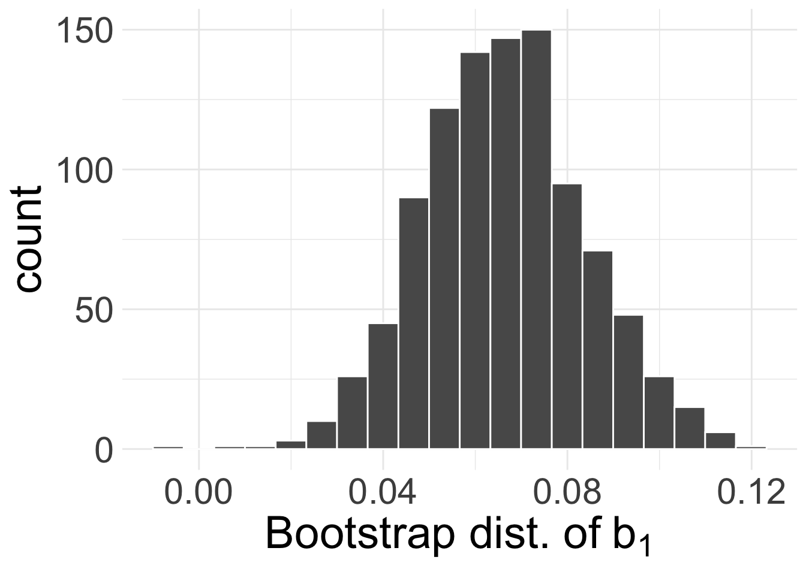
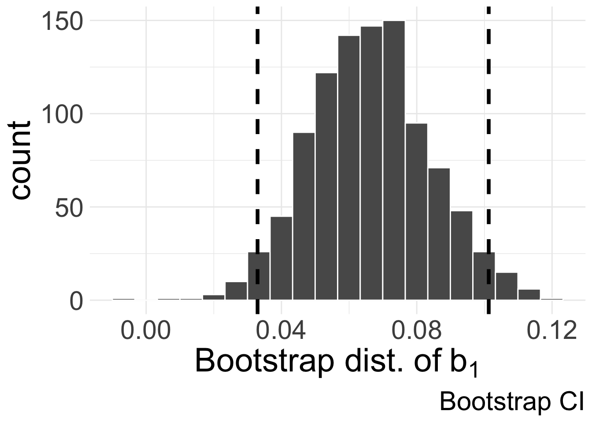
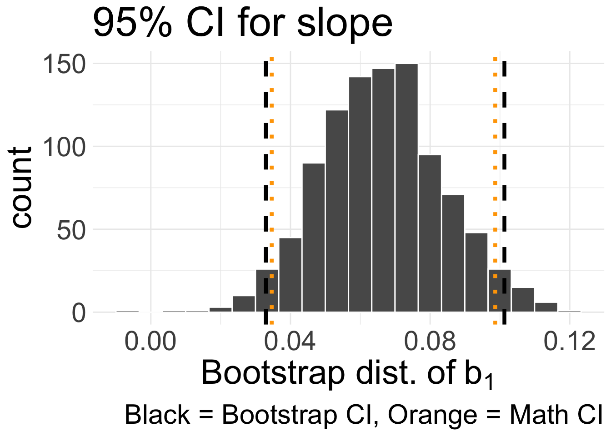

Simulation-based CIs for SLR
Housekeeping
Office hours changed this week:
Wednesday (today!) 4-5pm
Friday: cancelled, moved to next week before midterm
Coding practice due tonight
Recap
Point estimates \((b_{0}, b_{1})\) also have variability as their specific values depend on a given set of data
We saw how to use output from
lm()to test hypotheses about and create confidence intervals for \(\beta_{0}\) and \(\beta_{1}\)- Relies on LINE conditions being met
Let’s turn to simulation-based techniques (good refresher before midterm!)
Bootstrap CI for slope
evals data
First six observations:
| course_id | prof_id | score | bty_avg |
|---|---|---|---|
| 1 | 1 | 4.7 | 5 |
| 2 | 1 | 4.1 | 5 |
| 3 | 1 | 3.9 | 5 |
| 4 | 1 | 4.8 | 5 |
| 5 | 2 | 4.6 | 3 |
| 6 | 2 | 4.3 | 3 |
Recall our model:
\[\underbrace{\text{score}}_{y} = \beta_{0} + \beta_{1} \underbrace{\text{bty_avg}}_{x} + \epsilon\]
- We can index to denote specific row/observation pairs \((x_{i}, y_{i})\)
- e.g. \((x_{1}, y_{1}) = (5, 4.7 )\)
Bootstrapping
Repeat \(B\) times:
Sample with replacement from the original data, of the same sample size as the original data
Calculate the quantity of interest using the resampled data
In the case of SLR: what exactly should we be “resampling”? What is the quantity/quantities of interest?
Bootstrapping for SLR
- For a given observation \(i\), we need to keep \((x_{i}, y_{i})\) together
Want to keep pairs of
scoreandbty_avgtogether, but different pairs may be re-sampledWe will re-sample with replacement row-by-row
- For each re-sampled dataset, fit a linear regression model and record \(b_{1}\)
- This yields bootstrap distribution of estimated slope coefficients!
Live code for bootstrapped slope
Bootstrap distribution of \(b_{1}\):

95% bootstrap CI for \(\beta_{1}\): (0.033, 0.101):

Confidence intervals
| term | estimate | std.error | statistic | p.value |
|---|---|---|---|---|
| (Intercept) | 3.880338 | 0.0761430 | 50.961213 | 0.00e+00 |
| bty_avg | 0.066637 | 0.0162912 | 4.090382 | 5.08e-05 |
Compare to our 95% CI for \(\beta_{1}\) using mathematical model: (0.035, 0.099)

Looking towards testing
Recall our hypotheses for the slope: \(H_{0}: \beta_{1} = 0\) versus \(H_{A}: \beta_{1} \neq 0\)
How might we use simulation to test these hypotheses? (i.e. how can we simulate “null world”?)